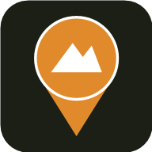

por Luiz Augusto de Oliveira Júnior
Conecta com a pasta do app no seu Google Drive, pra sincronizar as rotas salvas entre aparelhos.
Nenhuma pasta criada ainda. Pastas aparecem aqui quando você salva uma rota nelas.
Nenhuma rota salva. Volte ao planejamento para criar uma.
Nenhuma rota salva ainda.
O mapa da região será baixado para uso offline, se houver internet.
Verificando conexão...
Distância em metros para alertar quando você sair da rota planejada.
O GPS vai parar de gravar o trajeto percorrido.
Substituir a rota atual pelo arquivo importado, ou adicionar como um novo bloco combinável (pra montar uma rota juntando vários arquivos)?